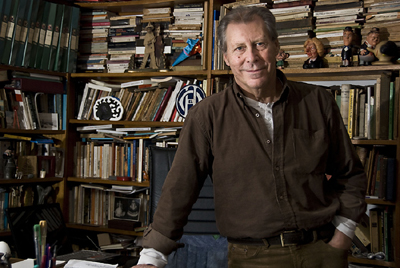
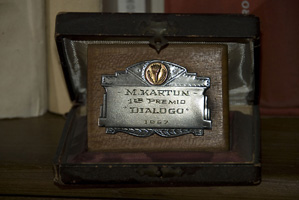

Franz Kafka
Escritos

Fotos: Juan Pedro Calabrese
Mauricio Kartun | Entrevista
por J. Martínez
En su departamento del barrio porteño de Villa Crespo, Mauricio Kartun recibió a ESTO NO ES UNA REVISTA para una charla en la que desfilaron los paisajes míticos de la infancia, la puerta de entrada a la literatura, los modos de producción del teatro, la política y la construcción de una de las voces más personales, rigurosas e importantes de la dramaturgia contemporánea.
Naciste en San Martín, provincia de Buenos Aires, en 1946, pleno auge del peronismo... ¿De qué modo operó ese entorno simbólico para vos como niño?
Yo tengo una especie de muy poderoso encuadre mítico: el universo de la infancia. De hecho, gran parte de mi producción, entre los 80 y los 90, con algunas excepciones, no fue otra cosa que procesar imágenes de esa infancia, de ese barrio y de esa época. Chau, Misterix está ubicada en los 50, que fueron muy importantes, junto con los años 60, fundacionales de una poética que fue la que predominó en mi producción. Todo lo que escribía, de alguna manera, venía de esa cantera, un imaginario recurrente en todas mis obras. Era una provisión de recursos interminable, donde lo que yo descubría era que esas imágenes constituían una especie de proveeduría mítica, en la cual, cada vez que iba, encontraba nueva materia; y una obra me llevaba a nuevas imágenes y esas imágenes a una nueva obra. Cada obra inauguraba su propia zona de pre-texto futuro y esa cadena parecía interminable. Casi te diría que tuve que hacer esfuerzos para salir de eso. Por otro lado, cuando escribía sobre algunas temáticas extra-barriales, ciertas formas de aquella experiencia se manifestaban en esa escritura. Yo escribí en los 80 una obra, Pericones, ubicada a fines del S. XIX, pero buena parte del imaginario, de piratas muy Salgari, no estaba exento de esta misma influencia, porque también venía de aquella matriz mítica infantil y adolescente. De modo tal que yo creo que le he sacado el jugo a es mítica. Los artistas, pero más específicamente los escritores, hemos hecho una especie de curiosa alquimia en la cual los recuerdos, las viejas imágenes, las impresiones, se vuelven la materia de la cual uno termina viviendo. No sólo tienen que ver con una producción imaginaria sino también con una producción profesional. En alguna época me fue útil y hasta te diría salvadora, porque yo creo que gracias a esa cantera, me sentí lo suficientemente seguro como escritor como para dejar otras.
¿Cuáles?
Yo hice un periplo curioso. Mi infancia fue en una familia en la que se inculcaba la cultura del trabajo como un mecanismo virtuoso. Yo laburé desde muy chico con mi viejo en un depósito de cereales y en un puesto en el Mercado del Abasto. Luego, mi viejo se murió y con mi hermano nos quedamos trabajando en el Abasto; lugar que supone esfuerzo, por decirlo de una manera suave, porque te matás trabajando desde las 2 de la mañana y cuando todo el mundo se levanta es cuando a vos te toca ir a dormir. Dejé ese trabajo por el teatro y la militancia en los años 70, en un acceso romántico y con cierta ilusión en la continuidad democrática, que me duró poco, hasta 1976. Y quedé de nuevo en pelotas. Durante unos años chapaleé, trabajé como actor en algunas películas argentinas siendo que yo no era actor; siempre a caballo de relaciones que me habían quedado a partir del teatro... Trabajé en una prestigiosa selección de películas malas: desde Olmedo y Porcel hasta los Superagentes, pasando por Andreíta del Boca y Palito Ortega... (Risas)
¡Que compendio!
Sí... tengo una especie de curriculum demoledor. Esos trabajos no eran otra cosa que una ayuda, no una profesión. Entonces volví a la actividad comercial y me puse a vender electrodos de soldadura eléctrica. Aprovechando cierto conocimiento y tradición en el comercio, rápidamente descubrí cómo era el negocio, así que me puse el mío propio. En un momento hubo un punto de inflexión: la sociedad comercial se desarmó y yo tenía que tomar una decisión. Una alternativa era jugarme por esa actividad comercial, en la que me iba muy bien, hipotecando el sueño de la producción artística. Algo así como: “a ver cuánto le saco a esto para no dedicarme a lo otro y me dedico a esto”...
Bajar la cortina...
Bajar una cortina, claro, y levantar la otra. Y esta sensación de que había un campo posible en lo artístico y lo pedagógico que, en mi caso, son una especie de un mecanismo en el cual no logro descubrir cuál es la rueda de uno y otro. Me animé a dar un paso en ese sentido que, creo, fue la gran decisión. Y creo que pude hacerlo porque sentía que tenía muchas obras por escribir, que había mucho material. Había comprobado que me salían y que tenían resonancia; que había una cantera mítica y que había mucho por escribir y que, aún en la hipótesis más optimista, nunca podría agotar esa cantera.
Hablaste de Salgari. ¿Qué autores constituyeron tu entrada a la lectura? Partiendo del supuesto de que, como la mayoría de los escritores, te constituiste primero como lector...
Yo fui y soy un lector obsesivo; enfermizo, en mi infancia. Paradójicamente, en una familia de una formación cultural muy elemental. Mi madre era de un pueblo de España, mi padre de una colonia judía de Santa Fe. Los dos, puestos a trabajar desde muy pequeños, con sólo el 3er. grado de la primaria completo. Pero descubrieron el placer por la lectura y tuvieron una reacción extraordinariamente generosa. En mi barrio, San Andrés, había una librería de barrio que conjugaba la venta de cigarrillos, lápices, cuadernos y los libros y revistas que llegaban allí. Mis viejos me abrieron una cuenta en esa librería que se llamaba La Mickey. Mi mamá les dijo: “Todo lo que sea para leer, puede llevárselo y firmar”. Era la época en que se usaban las libretas donde se anotaba lo que se fiaba, así que yo andaba con mi libretita y me compraba desde la revista Rico Tipo hasta libros de la colección Robin Hood, donde descubrí a Salgari. Y de Salgari pasé a Verne y a títulos de mayor ambición. También tenía algunos tíos comunistas que eran los proveedores de una otra literatura, a veces más interesante y otras abominablemente melonera. Pero el gran descubrimiento fue Horacio Quiroga. Me recuerdo en la cama de mis padres leyendo los "Cuentos de la Selva" una y otra vez... Al releerlo de adulto, había frases enteras que recordaba, por ejemplo, de "Las Medias de los Flamencos". Ahí se abrió un camino: leí todo Quiroga, en la biblioteca de unos tíos había libros de Roberto Arlt, otro extraordinario descubrimiento. Y después empezó un camino multiplicador. Con el paso de los años, descubrí que tengo las primeras ediciones de Piglia, las primeras ediciones de Cortázar...

Azarosamente, como siempre. Vivíamos en San Martín, pero veníamos al Centro a ver teatro, en el Pontiac ’47 de mi padre. A mi viejo le gustaba el teatro de revistas, en una época en el que era un espectáculo para toda la familia. Para mí fue fundacional de cierta zona de gusto por el humor guarango que disfruto, cultivo y produzco. Y también tiene que ver con compartir la experiencia masculina con mi viejo. Mi madre tenía otros gustos: cuando era ella la que elegía íbamos a ver comedias españolas, o bien íbamos a algunos varietés españoles como “El Tronío”, donde actuaban cómicos españoles, bailaores, recitadores y cantaores. Por el otro lado, mis tíos bolches nos invitaban a teatros independientes, nos conseguían entradas. Recuerdo haber visto en teatro Fray Mocho; el estreno de la primera obra del Chacho (Osvaldo) Dragún... El teatro era parte de mi experiencia infantil. Pero de ahí a escribirlo... Ni siquiera me imaginaba cómo se escribía teatro. Empecé por escribir narrativa, por otra cuestión muy azarosa. Un día, una novia se ofreció a tipear lo que yo escribía. Y como pasa siempre, la letra impresa invita a mostrar. Lo primero que hice fue presentarme a un concurso de cuentos, en el año sesenta y pico, por ahí tengo la placa, al lado de esa vaca, Eso fue definitivo: ganar un concurso donde competí con otros escritores, publicados, adultos, me transformó en un escritor promisorio del barrio, con todo lo que eso significa de exigencia. Tenía un mentor literario, un tipo del barrio al que le llevábamos los materiales y opinaba. Y me dijo que mis diálogos eran artificiales, muy armados; y que el teatro era el mejor entrenamiento para soltar el oído a los diálogos. Entonces me metí a hacer cursos. Primero hice uno de literatura de vanguardia con Juan Jacobo Bajarlía, autor del que aprendí mucho, mucho. Un tipo fantástico...
Un tipo raro dentro de la literatura argentina...
Un raro, efectivamente. Un día me pasó una obra de teatro que él tenía escrita y que no me gustó, pero no le dije nada porque era el maestro. Después hice un curso de historia del arte y, luego de unas pocas clases, me di cuenta que no era otra cosa que un grupo de señoras que se juntaban para ver diapositivas, y encima las señoras no eran para mi edad, así que ni siquiera había un estímulo erótico. (Risas) Y yo vivía en San Martín, así que venir al Centro a estudiar también tenía algo de decisión de vida. Me metí en ese curso de Bajarlía y se me abrió el camino. La dramaturgia es una actividad más social que la narrativa. El teatro se completa en la actividad social. Sin ella, la escritura no tiene sentido. Y eso te lleva a entrar en contacto con la actuación, con la dirección, empezás a fantasear con montar tus propios textos. Y, de pronto, descubrí que a mi maestro le gustaba lo que escribía; eso del ojo del otro que te dice “Esto está muy bien... Seguí, seguí”.
¿Cómo vivís la interpelación de ese otro a tu palabra, ese ojo, esa presencia transformadora?
Yo creo que la dramaturgia fue la puerta de entrada al pensamiento. Y el pensamiento es la puerta de entrada a la filosofía, a la ideología... Cuando tenés alumnos, por ejemplo, tenés un lugar de reflexión en común y empieza a aparecer todo eso.
Empieza a filtrarse la palabra del otro...
Exactamente. Y, con el tiempo, te das cuenta de que es altamente útil el poder compartir con el otro. Poner en palabras el propio pensamiento y descubrir que, al ponerlo en palabras, también te lo explicás a vos mismo; que al ponerlo en palabras uno se estimula a escribirlo y que al escribirlo uno puede volver, para reflexionar sobre esas palabras, aparece un campo de reflexión que está presente siempre en lo que escribimos.
En el teatro, la exposición de la obra literaria trasciende la palabra escrita, tiene el plus de la intervención de los actores y del público, que también interpelan a la obra. Imagino que ese plus te debe devolver algo que no devuelve la narrativa, cuya lectura es, por lo general, privada, íntima.
La exposición es más fuerte en todo sentido. Más poderosa como estímulo y más cruel, hasta el horror, cuando no funciona. Porque la exposición es indisimulable. Yo siempre les digo a mis alumnos: “El carnet de dramaturgo, no te lo dan cuando estrenás una obra; te lo dan el día que sos capaz de espiarle la cara a los espectadores durante toda una función. Escondete en el escenario, hacé un agujerito y mirale la cara a los espectadores. Si soportás ese ataque al narcisismo que es ver la cara del tipo que se quedó dormido, del que le comenta algo, con cara de orto, a la señora; el que está distraído... aunque el teatro te da siempre la posibilidad de decir “No lo hicieron bien... Ellos no lo hicieron bien”. (Risas) Y, un día, descubrís un texto que funciona. Un texto que provoca que el espectador tenga un contacto empático, que esté entusiasmado, en su sentido literal. Cuando el espectador está conmovido... En el teatro, la manifestación es física. Nunca verás la manifestación física de un tipo que se entusiasma con tu novela (Risas).
Si uno lo lee desde el punto de vista del espectador, de la trascendencia, en tanto circulación de una obra, parece ser Chau Misterix esa droga que entusiasma.
Yo aposté a que fuera Chau Misterix. Tanto es así que convencí a gente amiga para que pusiera guita para montarla. Fuimos a una sala, hicimos dos meses y pasó sin pena ni gloria. En términos de representaciones, la primera versión de Chau Misterix fue un fracaso. Tuvimos unas críticas malas y, en el medio, un par de críticas de un entusiasmo inusual por el texto, que hablaban de algo inaugural, de la aparición de una voz nueva. Fue muy curioso porque fracasó y a los dos o tres años se publicó y, a partir de esa publicación, hace ya 25 años, no paró de ser representada. Siempre en Argentina o en algún lugar del mundo la obra está en cartel. En este momento, por ejemplo, tiene 3 o 4 versiones en cartel. Pero no fue ese el punto de inflexión.
¿Y cuál fue?
El punto de inflexión se produjo en el estreno siguiente: La casita de los viejos, que se estrenó en Teatro Abierto de una manera muy curiosa. Yo ya no quería escribir. Estaba muy cansado. Pensaba: “Otra vez escribiendo, otra vez viendo cómo juntar la guita y otra vez para estar sólo dos meses”. Había un concurso, el de Teatro Abierto y mi mujer, que estaba embarazada de mi primera hija, me hinchaba las bolas para que presentara una obra. Yo tenía una excusa, la mano operada a raiz de un accidente muy grande con unas herramientas, pero mi mujer pronunció las palabras mágicas, que nunca dejo de agradecerle: “Encontraste la excusa perfecta para no presentarte en el concurso y después ir a ver esas obras y decir, con total impunidad, «esos pelotudos escriben mucho peor que yo»”. Y me senté y escribí esa obra y al otro día nació mi hija. Fue un vendaval de cosas. La obra fue seleccionada para ser montada en ese ciclo de Teatro Abierto. Un día me llama Agustín Alezzo, que era una figura patriarcal, un referente artístico, el más prestigioso de los directores de ese momento. Y me dijo que quería dirigir mi obra y no otra. Ese fue el punto de inflexión. Ahí decidí dejar los electrodos.
Hace algún tiempo vi Ala de criados y me pareció muy interesante la rigurosidad con que está tratada la lengua propia de esa época. En esa función, escuché dos o tres palabras que me pareció que se habían colado en esa precisión. ¿Cuáles es tu posición en relación a la rigurosidad del texto?
Soy muy riguroso con el texto que acordamos, lo que no quiere decir que mi texto no pueda ser modificado. Más allá de que, en todas las funciones, suelen aparecer esas filtraciones, que son una necesidad musical que tiene el teatro. Como director, cuido mucho eso y vuelvo sobre esas filtraciones: las que son pertinentes, las señalo para que se queden en el texto; las que no lo son, pido que no repitan. Soy riguroso con el lenguaje porque llegar a un texto definitivo, me supone pasar por unas 30 versiones previas. Y en cada una vuelvo a corregir y vuelvo a buscar palabras que tienen un valor de sentido, un valor musical y poético, en tanto aluden a un lenguaje, que el espectador termina de completar a partir de su propio conocimiento; un lenguaje que le propone al espectador entrar en un universo al que uno no ha accedido nunca. A mi me gusta transitar el teatro en esa búsqueda. Eso me obliga a ser muy riguroso con las palabras: “Esta es la letra”. Este elenco de Ala de Criados, por ejemplo, es un elenco de actores que vienen de experiencias con directores que no solamente son más permisivos, sino que exigen cierto aporte porque parte de sus textos se crea en el trabajo de improvisación con el actor. Entonces a algunos se les hizo difícil tener que ajustarse de una manera rigurosa al texto, no poder ablandarlo, como dicen los actores. Los actores hacen eso con el texto: lo ablandan, lo arrugan, le dan una forma, lo pasan a la irregularidad coloquial, hecha muchas veces de raras puntuaciones, de interrupciones, de inversiones de palabras dentro de la frase. Creo que, para el actor, es un entrenamiento apasionante el tener que entenderse como intérprete de una materia compleja –como lo es un texto–, en lugar de entenderse como el generador de un símil, es decir, de lo que él haría, desde lo coloquial, con esa frase.
En el año del Bicentenario de la Revolución de Mayo, donde los medios que representan una actualización de aquel poder piden volver a 1910 (cuando la concentración del poder económico era mayor, se trabajaba sábados y domingos, no estaba prohibido el trabajo infantil, la mujer no votaba, el voto era calificado y otras delicias de esa suerte de primitivismo democrático), Ala de Criados, situada por esos años, produce una metáfora que evidencia el contaste entre aquél momento socio-político y éste, pero también expone lo que aún permanece intocado, la continuidad del modelo capitalista. ¿Cuánto hay de elección en ese efecto?
Como en toda propuesta poética, la metáfora nunca es ingenua. Yo trabajo respetando la metáfora en su naturaleza, como una emisión multívoca, como algo que está cargado de muchos sentidos y trato de no cerrarla nunca en lo alegórico que, a mi parecer, es la degeneración de la metáfora. Yo escribo desde mis propias obsesiones, que también son ideológicas. Pero el hacerlo no contamina mi convicción de poeta. Como decía Tenesse Williams: “Que ponga la poesía en los diálogos no me hace menos poeta”. (Risas) Hay algunas metáforas que se me vuelven como más obvias. Hay un momento en la obra, en el discurso de Pedro, el prototipo de clase media, que dice: “Ustedes arman la revuelta y nosotros salimos con la banderita por boulevard Callao”. Naturalmente no es inocente en relación al quilombo con el campo, momento en que la escribí, y eso, de alguna manera, estaba humedeciendo el material, lo estaba impregnando. Pero insisto: me parece que la trascendencia de un texto está en no quedar atado a la moral de época ni a la referencia cultural, ideológica, ni más chatamente filosófica de la época.
Esto también me hace pensar en algo que alguna vez leí, en un reportaje que te hicieron, en relación a la parodia y a cómo la traición se había transformado en algo tolerado.
Eso tiene mucho que ver con mi obra anterior, El Niño Argentino. Si yo tuviera que explicarla, cosa aborrecible para los poetas, diría que es un tratado sobre la traición en la política y en la sociedad argentina; sobre cómo el mecanismo de la traición comienza a legalizarse a través de la política. Porque es la política la que comienza a convencer a los ciudadanos de que la traición es uno más de los mecanismos para hacer política. Usa una amplia gama de eufemismos para decir: “Antes de las elecciones yo digo una cosa y, si subo, haré otra y vos tendrás que entender que eso es así; que es uno más de los mecanismos, es parte de la política”. El menemismo fue el más notorio representante de este mecanismo. Por ejemplo, en su primera presidencia, Menem nombra Ministro de Economía a un gerente de Bunge & Born. Y uno se preguntaba: “¿No era que este hombre hablaba de Facundo hasta hace 15 días?” (Risas) Esas patillas, ¿no referían a un pensamiento de liberación latinoamericana? Lo que se legitima es un discurso como este: “Señores, entiendan que los políticos tenemos necesidades para llegar al poder. Estas necesidades implican promesas que no podrán ser cumplidas: no sean tan ingenuos como para reclamarlas...”. Lo que me parece horroroso es que, con el paso del tiempo, se va legitimando que nada de lo que un político diga o haga pueda ser tomado fuera del campo de lo verosímil, que no es lo verdadero.
Y su eco en la degradación, por ejemplo, de la investidura presidencial, con ese punto cúlmine que es De La Rúa ridiculizado en el programa de mayor audiencia de la Argentina. Una degradación que tiene como consecuencia que el principal referente de la oposición es vicepresidente y que, de tanto en tanto, está sentado en el sillón presidencial...
Es muy curioso lo que sucede. Uno empieza a pensar en esa horrible paradoja de las alianzas que no son tal, porque no hay alianzas sino rejuntes. Lo que prevalece es la necesidad de votos para llegar a ese lugar de poder y no la constitución de un pensamiento en común. Y entonces decís: “Che... ¡Ese es tu peor enemigo!”. Y sí, es el peor enemigo porque no hubo alianza. En este momento la habilidad, la elasticidad, la gomosidad, para decirlo en términos más despreciables, de la política, es una situación horrorosa para el ciudadano, para el pueblo. Una sensación de charca, de barro...
Y no de barro fundacional, precisamente
(Risas) No, no es el barro del que se sacan los ladrillos. Es barro de pantano.